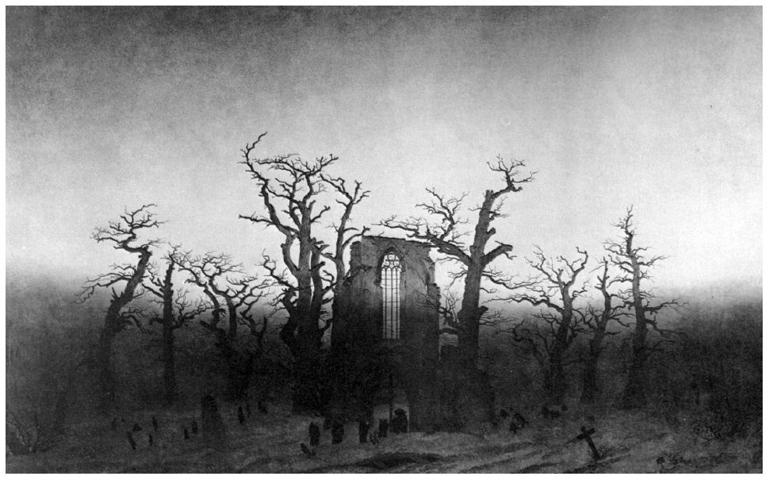
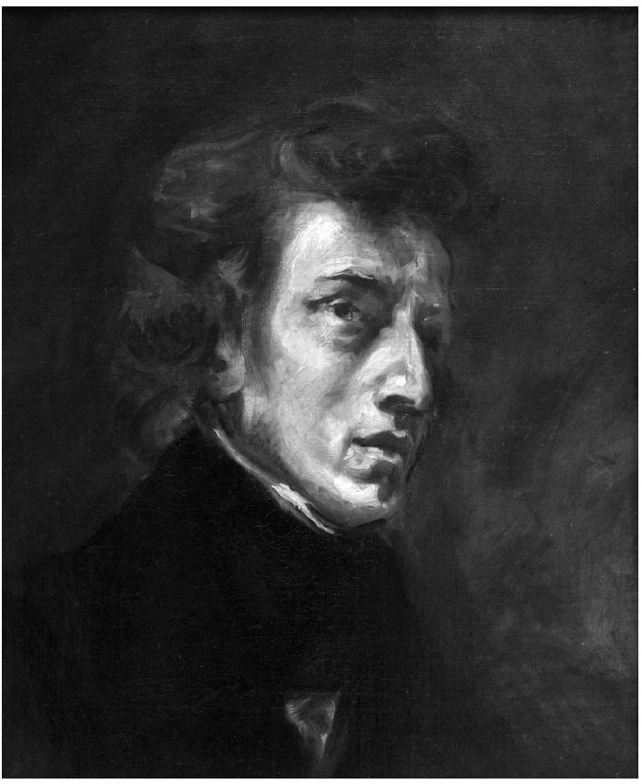

浪漫主义首先是一场艺术运动。即便其所有独具特色的思想、情感、哲学和政治愿景均被取而代之（的确有人如此说过），它依然为我们留下了不朽的遗产，包括文学、音乐、绘画、建筑和芭蕾舞剧的杰出作品。浪漫主义抒情诗无疑是它众多辉煌成就中的点睛之笔，唯有文艺复兴时期的诗歌才能与之媲美。浪漫主义抒情诗还激发了日后诸多优秀长篇小说、戏剧作品和短篇小说的创作灵感。很难想象，现今一支大型交响乐团在演出时不会定期演奏浪漫主义音乐作品。音乐理论家们会争论诸如贝多芬到底应被视为浪漫主义还是“古典主义”这样的问题，但是，也许仅仅因为E.T.A.霍夫曼和其他人将其誉为“浪漫主义”，通常都会认为贯穿19世纪的浪漫主义音乐始于贝多芬，并在舒伯特、舒曼、门德尔松、肖邦、李斯特、柏辽兹、瓦格纳、罗西尼、威尔第、德沃夏克、勃拉姆斯、柴可夫斯基、德彪西及其他众人的推动下得到繁荣发展。艺术史学家将“浪漫主义”限定在一个更短的时期内，这与文学史学家的观点大致相同。据说，浪漫主义作为艺术运动已于19世纪中叶让位于现实主义和其他艺术流派。即便如此，它还是孕育了诸如康斯太勃尔和透纳、弗里德里希和朗格、德拉克洛瓦和杰利柯等大师。而之后诸如印象主义、象征主义、表现主义和超现实主义等流派似乎均能寻得浪漫主义的根源。对于任何一个通过艺术而获得富有想象力生活的人而言，失去浪漫主义就像是失去了四肢，或是失去了大脑的脑叶。
综观浪漫主义的各种艺术形式，对照它相同的世界观来看，它们是否存在共性？在这最后一章，我将设法简述这些艺术形式的相似之处，探讨某种我们或可称为“艺术的浪漫主义体系”的东西是否显现。
内容
显而易见，我们应该从大量的音乐和绘画作品的内容或主题入手，尤其是改编自文学作品的音乐作品和绘画作品，因为这样最易于追根溯源。歌剧、宗教剧和歌曲（例如德语艺术歌曲）最初都是半文学形式的，作曲家和剧作家几乎穷极浪漫主义作家的所有作品来进行二次创作。我们已经提及以司各特小说为蓝本而创作的歌剧，此外，还有以其诗歌为创作蓝本的作品，如罗西尼的《湖上女郎》（1819）就改编自《湖上夫人》。席勒所有的戏剧作品均被改编成歌剧，其中四部出自威尔第之手。所有这些歌剧中，罗西尼的《威廉·退尔》（1829）因极具魅力的序曲而最为著名。拜伦的戏剧作品和东方叙事诗也受到狂热追捧：其《异教徒》、《阿比道斯的新娘》、《海盗》（其中之一由威尔第改编）、《莱拉》、《帕里西纳》（其中之一由多尼采蒂改编）、《马里诺·法列罗》（其中之一由多尼采蒂改编）及《萨尔丹那帕勒斯》均被改编成多部歌剧。谈到这些，我们也许还可以加上莎士比亚戏剧的歌剧版本，尽管他不是浪漫主义作家，但是在其被新古典主义批评家长期忽视和埋没后，欧洲大陆出现的莎翁热已然成为浪漫主义的一个标志。舒伯特创作了600首德语艺术歌曲，产量令人惊叹。这些歌曲的歌词均出自从莪相到海因里希·海涅等人的作品，俨然可以组成一本内容翔实的德国浪漫主义和“前浪漫主义”诗歌集了。
在这种情况下，脱离文本用音乐去演绎浪漫主义作品或主题就显得更加有趣了，例如柏辽兹的中提琴协奏交响曲《哈罗德在意大利》（1834），尽管这拜伦式的标题显然是后来才添加上去的。此前，柏辽兹就已创作《幻想交响曲》（1830），曲目介绍中描述了作品的文学性“情节”；19世纪50年代，弗朗茨·李斯特在雨果、拉马丁、席勒、拜伦和莎士比亚作品的启发下，创作出十几首“交响诗”。每个音乐家都写过序曲，他们通常把这些序曲同它们的原属作品分开来进行单独演奏；这实际上是一种典型的浪漫主义风格。柏辽兹曾为司各特的小说《罗布·罗伊》、《威弗利》，拜伦的长诗《海盗》以及莎士比亚的两部戏剧写过序曲。最为著名的序曲应该是门德尔松的《赫布里底群岛序曲》（1829），也被称作《芬戈尔山洞序曲》。聆听这乐曲，你仿佛能感受到那一叶驶向传奇盛地的扁舟随波浮动的场景，与远古战场上传来的嘶鸣之声互相交替，交相辉映，正如我们在芬戈尔之子莪相的歌曲中听到的一样。
上一章我们提到过德拉克洛瓦用绘画形式呈现了浪漫主义作家所描绘的大量场景，这里，我们还应该加上莎士比亚和弥尔顿。就像第三章提到的那样，德拉克洛瓦对诸如塔索和奥维德等苦难诗人颇感兴趣。他还为肖邦、乔治·桑以及小提琴名家帕格尼尼画过肖像。J.M.W.透纳创作过一些文学性主题的作品，但是，他最杰出的主题却是最崇高时刻的自然，如他笔下的高山风景画和波涛汹涌的海景画。他的创作灵感来自崇高文学理论及对其诗意般的描述。德国画家弗里德里希也是如此，因此才有了他笔下的群山雾霭、海岸明月，以及他对自然所恢复的哥特式遗迹那种近乎痴狂的喜爱。
许多浪漫主义诗人、画家、作曲家都对黄昏和夜晚情有独钟。海伦·玛丽亚·威廉姆斯曾写下十四行诗颂扬黄昏（1786），称之为“我忧伤的灵魂最爱的时刻”。在《夜颂》（1800）中，诺瓦利斯认为远古众神回归伟大的“夜”之后，“夜”便化身为“强大的启示孕育者”。福斯科洛在十四行诗《致黄昏》（1802）中向黄昏述说：“你总是随着我内心的呼唤而来：/悄然温柔地倾听我心底的秘密。”艾兴多夫在一个“月夜”（1837）说，他的灵魂得到舒展，展翅飞翔。弗里德里希是描绘黄昏和夜晚的绘画大师。除他之外，还有许多画家也都深深地被暮色和月光的微妙复杂所吸引，竭尽全力去捕捉个中变化。在18世纪，“小夜曲”和“夜曲”就时常在夜间被演奏，但是“夜曲”作为一种音乐体裁，却是浪漫主义的一大创新。第一个真正创作出如夜一般钢琴曲的是爱尔兰作曲家约翰·菲尔德，夜曲采用左手琶音式和弦伴奏，旋律或怡然恬静，或安谧悦耳。肖邦听后深受启发，创作了21首独具风格的夜曲，如今，这些夜曲已被广泛纳入其最伟大的钢琴独奏曲之列。

图15 卡斯帕·大卫·弗里德里希，《橡树林中的修道院》（1809—1810）。在小幅复制品中很难看清有一列修士正在向修道院废墟行进。画家卡尔·古斯塔夫·卡鲁斯（1789—1869）认为此画可能是“新近所有风景画中最深刻的诗意艺术品”
形式
文学对音乐的一个更为微妙的影响是，人们会采用文学体裁为音乐流派命名。肖邦的四首叙事曲就是重要例证：这些时长约为十分钟的钢琴独奏曲，每一首似乎（至少曲名透露出这一信息）都带有叙事特征，仿佛在叙述一个正在发生的故事。早期的一个乐评人曾经写道：“聆听肖邦的音乐就像是在诵读拉马丁的诗歌。”很多人使出浑身解数想要找出肖邦的叙事曲与其同乡诗人密茨凯维奇的叙事诗歌之间的关联，最终大多无果。数名作曲家创作了器乐版的“浪漫曲”（romances），这个词在此处指的不是中世纪的文学叙述形式，而是更为晚近的西班牙的民谣或歌曲。其中，贝多芬的两首小提琴和乐队浪漫曲以及罗伯特·舒曼和克拉拉·舒曼夫妇的套曲可能最为有名。另外还有“无言歌”，尤其是门德尔松的钢琴小品，以及数首没有歌词的浪漫曲。
上述部分例子表明，音乐形式趋于更加简短，如小夜曲、前奏曲、即兴曲、序曲、幻想曲、瞬想曲和声乐套曲等诸如此类。这与文学领域中文学形式趋于抒情化的趋向十分吻合，如十四行诗、颂歌、抒情乐、沉思录和挽歌等。就音乐而言，这部分是因为中产阶级家庭能够依靠自己的实力购得新钢琴并能够举办自己的音乐会，使得家庭演出的数量不断增加。当然，长篇巨制的音乐类型也在同步增加，特别是在贝多芬凭借第三交响乐曲《英雄》（1804）将交响曲的篇幅扩大一倍之后。与此同时，诗人们继续创作，或者说是满怀雄心去创作史诗。然而，在音乐和文学这两种艺术形式中，简化的作品却声名鹊起。
绘画也存在类似的情况吗？综观浪漫主义画家，似乎可以这么说：风景画和肖像画获得了突出地位，当然，这是以牺牲“历史画”为代价的。历史画与文学领域中的史诗或悲剧相对应，曾被视为绘画领域最高级的艺术表现形式。毫无疑问，德拉克洛瓦因宏大的历史或寓言式的绘画作品而广受赞誉，如《萨尔丹那帕勒斯之死》（1827），但他以北非为素材创作的一些较小规格的场景画和肖像画也同样为人赞赏。此外，透纳的绝大部分画作，以及弗里德里希和康斯太勃尔近乎全部的画作均为风景画。
如果说次要体裁地位的提高打乱了新古典主义创建的秩序，那么，我们也能清楚地发觉这些体裁本身有所延伸或解体。例如，华兹华斯以弥尔顿式无韵诗的形式写作了一部叙事性自传；雪莱和济慈在十四行诗中几乎尝试了各种可能的韵律安排；柯勒律治《克丽斯塔贝尔》（创作于1797和1800年）首创了不规则诗节和无韵“对话诗”，司各特后来在他自己的罗曼史中模仿了这些形式；雨果在亚历山大体诗行中大胆放置了音顿，即一种韵律停顿，震惊了那些吹毛求疵之人。很多浪漫主义者都渴望在舞台上取得成功，但是一些人也创作了不适合舞台表演的书斋剧：歌德的《浮士德》第二部分、拜伦的《曼弗雷德》、雪莱的《解放了的普罗米修斯》以及密茨凯维奇的《先人祭》等。作曲家们推动了古典奏鸣曲的形式发展——用不同的琴键表达两个对比主题，首先陈述主题，通常是两次，然后展开，之后扼要重述主题——使其达到极限甚至超越极限。例如，在肖邦的叙事曲中，我们可以觉察到两个主题的陈述和发展，但是这两个主题甚至在“提示部分”就会出现变化。这些叙事曲伴有大量的转调和离题的插曲，有时会出现第三个主题，最后通常以长长的尾声结束。在贝多芬手里，交响乐不仅变得规模宏大，而且在最后的乐章加入了气势磅礴的人声合唱。
深思熟虑而非附带发表片段作品，如萨福诗歌的断简残篇和被认为是麦克福森作品的莪相诗作片段，是浪漫主义作家们的特征。这在一定程度上体现了艺术作品简化的趋势。歌德的《浮士德片段》（1790）使其更具影响力，此后，各种文学体裁片段的数量开始激增。弗里德里希·施莱格尔发表的《批评片段》（1798）和《雅典娜神庙片段》（1800）均对浪漫主义理论及片段自身的理论产生了深远的影响。他写道：“古人的很多作品都变成了片段，而很多现代作品一写出来就是片段。”（《雅典娜神庙片段》，24）在施莱格尔看来，这些现代“片段”表面上看是完整无缺、圆满的作品，实则只是多个梦幻性瞬间的合集。作家写作失去灵感时便即刻停止，并将其未完成的作品称为“片段”，这样的做法更为率真。柯勒律治写作《忽必烈汗：梦中幻想，片段》（1797）和拜伦写作《异教徒：土耳其传说之片段》（1813，第一版）均是如此。柯勒律治给出了一个值得怀疑的托辞（当时一位到访者打断了他的写作），拜伦却在其后续版本中不断地添加片段。普希金的多首诗歌也被贴上“片段”（otryvok）的标签。这些诗作和许多其他被认为是“片段”的作品，似乎都是通过逗弄和激发读者想象力来填补作品空白的。
绘画和音乐中也存在类似的情况吗？这个时期的展览和沙龙均不太可能展出明显未完成的画作，但是诸如透纳和德拉克洛瓦的一些作品笔触粗粝，常被观赏者误认为是速写。不久之后，各式各样的速写、习作和铅笔素描开始至少在画室展出，并且因其具有自然美和看似贴近画家最初灵感而为人们所钟爱。许多音乐家都是才华横溢的即兴创作者，他们常在公众音乐会上预留时间去按照观众建议的主题当场创作曲目。肖邦的短小钢琴曲，尤其是前奏曲，在一些人听来，演奏的是未完之音，它们已摆脱了“引子”的桎梏。而最近，查尔斯·罗森声称，从音乐角度看，肖邦和舒曼的数首钢琴曲是片段式的，其原因或是在于他们以属七和弦结尾，而属七和弦听起来是未完之音，是为转调作准备的；或是在于这些钢琴曲常以一个模糊不清的音调开始，听起来像是凭空而起的转调。不足为奇的是，有关肖邦的讨论是由德拉克洛瓦为速写所作的辩护而引发的：

图16 欧仁·德拉克洛瓦，《弗里德里克·肖邦》（1838）。这是双人肖像画原作的一部分。原作中，肖邦坐在钢琴前，乔治·桑在一旁看着。肖邦的目光远离钢琴，好像正处于即兴创作时的出神状态
音乐的声望
我们将以考察音乐为一切艺术所提供的规范，来结束对一切艺术的若干相似之处的简要总结。按照“姊妹艺术”的传统，诗歌最亲近的姊妹是绘画。喀俄斯岛的西摩尼得斯曾声称，画是无言之诗，诗是有声之画；而贺拉斯认为诗亦犹画：“因为是画，所以也是诗。”或许诗歌与音乐的亲和关系对古人来说显而易见，无须阐明。但是到了18世纪，现代新古典主义者过分频繁地重复这些与绘画相关的言论，以至于人们似乎遗忘了诗歌与音乐的亲缘关系。浪漫主义者使音乐艺术重获新生，尤其是在德国，并且解除了绘画艺术的特权地位。克莱斯特将音乐艺术视为“所有其他艺术的代数公式”。弗里德里希·施莱格尔在小说《卢琴德》中写道：“当尤里乌斯和她谈论音乐、听她亲口复述他内心深处感受到这种浪漫艺术的神圣魅力时，他是多么开心！”E.T.A.霍夫曼也认为音乐是最浪漫的一种艺术形式，且可能是唯一浪漫的艺术形式。让·保罗写道：“没有一种颜色可以像音调一样浪漫。”海涅则表示音乐是“艺术的最高境界”。
这种对音乐的推崇在音乐家辈出的国度德国尤为盛行。事实上，许多德意志诗人本人也都是出色的音乐家。然而，在法国，甚至是在音乐并不盛行的英国，人们也很推崇音乐。柯勒律治认为，才华横溢的人能在其诗作中融入视觉形象；“但音乐欣赏和创作能力，却是来自与生俱来的想象力”。华兹华斯曾写过《音乐之力量》一诗。如果说济慈对希腊古瓮很是着迷，那么更令他沉醉的是夜莺的美妙歌声。作为爱与交流的重要媒介，音乐弥漫在雪莱的诗意世界里；它不仅存在于人与人之间，而且存在于《解放了的普罗米修斯》中的各个星球之间——那是天籁之音。
斯塔尔夫人认为音乐是一切艺术的重中之重，“智性的旋律”是对柯丽娜诗歌最高的赞誉。乔治·桑认同她的观点，她本人的多部小说就致力于音乐或音乐家的描写。拉马丁将其一本诗集命名为《和声曲》（1930），而《幻象集》（1832）中的一首老歌让作者奈瓦尔心醉。雪莱诗中描写的一些意象也在波德莱尔的《旋律》（1857）中有所体现。甚至一首常被认为是绘画创作的精粹的诗——戈蒂耶的《白色大调交响曲》（1852）都有着一个乐曲般的标题。有人可能会辩称，这是一种音乐剧唱法。19世纪晚期，魏尔伦发表诗歌宣言《诗艺》（1884），呼吁诗人抓住“雄辩”，扭断它的脖子，用“至高无上的音乐”“永远至高无上的音乐”去充溢他们的诗歌。
文学领域中抒情体的复兴也间接证明了音乐日渐繁盛的影响力。事实上，“抒情”这一词语原本就是音乐术语。因此，在英国，我们发现叙事体逐渐演变成抒情体。这一点，从一些诗歌标题就可见一斑：华兹华斯和柯勒律治的《抒情歌谣集》（1798）、玛丽·鲁滨逊的《抒情故事》（1800），以及雪莱的四幕抒情诗剧《解放了的普罗米修斯》（1820）。而更让人感兴趣的问题是，不再是诗歌的受宠姊妹的绘画艺术是否也逐渐被音乐化了呢？或许，我们可以将粗犷、急速的开放式绘画手法看作音乐化的表现，而这种绘画手法通常被视为浪漫主义流派的标志（尽管席勒、朗格和布莱克创作了更多的“线描”作品）。有时，人们会将透纳和其他浪漫主义画家视为抽象画派的鼻祖。整个19世纪，绘画渐渐变得抽象起来，不再只是简单模仿外部世界，因此，也呈现出其姊妹艺术诗歌的抽象化特点。德拉克洛瓦认为绘画中的和谐和音乐中的和谐有异曲同工之妙，“这种和谐既体现在和音的构成上，也体现在它们之间的关系上”。波德莱尔也曾用类似的话语称赞德拉克洛瓦具有音乐特质的艺术：“这色彩如和弦般美妙，宛如悠扬的旋律，又似动听的和声。人们在欣赏其绘画作品时，常常会感觉像是在聆听音乐一般。”因此，自然而然地，惠斯勒那幅饱受争议的近抽象派画作，有着一个乐曲般的标题《黑色和金色夜曲》（1875）；这幅画作是六幅（可能更多）“夜曲”系列组画之一。该系列还包括以“交响乐”或“和声”为题的画作。这些“夜曲”画作将观赏者的注意力吸引到纯绘画的形式特征上。几乎是与此同时，沃尔特·佩特在《文艺复兴》（1873）一书中以其著名的言论总结了这一浪漫主义趋势：“一切艺术都以趋近音乐为旨归。”
这些不同艺术形式的相似之处和相互作用是否构成一个系统，而不仅仅是一个群集，这值得商榷。我认为它们构成系统：这些不同艺术形式就像一个复杂星系中的恒星与行星，彼此互相吸引，共同运转。但是，随着19世纪新的文学、艺术和音乐流派的迅速彼此接续，这些艺术形式也在不断地变化着。有些人会认为，浪漫主义不过是一场反拨，仅仅是对先前新古典主义的否定，但我认为浪漫主义是一场革命，并且曾一度趋近于一个新的体系，尽管这一体系不够稳定、不够完整，但其主题、形式及风格均得到广泛再现。实际上，浪漫主义是最后一场革命，自那以后再没有任何一场艺术运动能够如此持久深刻、影响深远而又浑然一体。